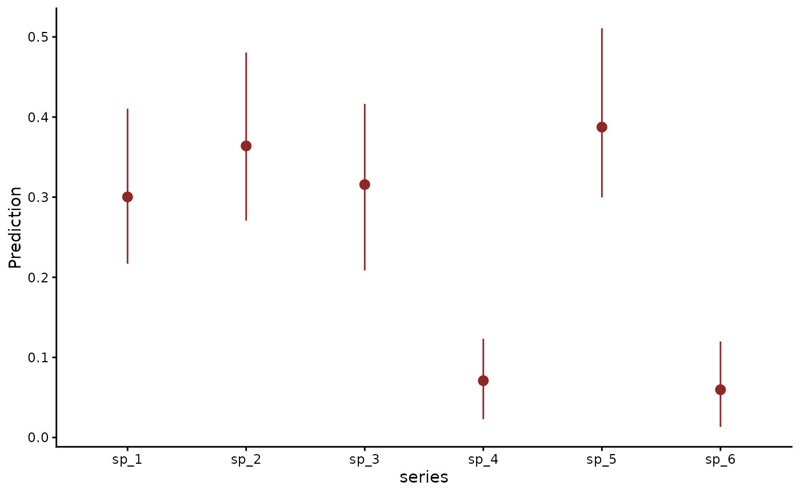
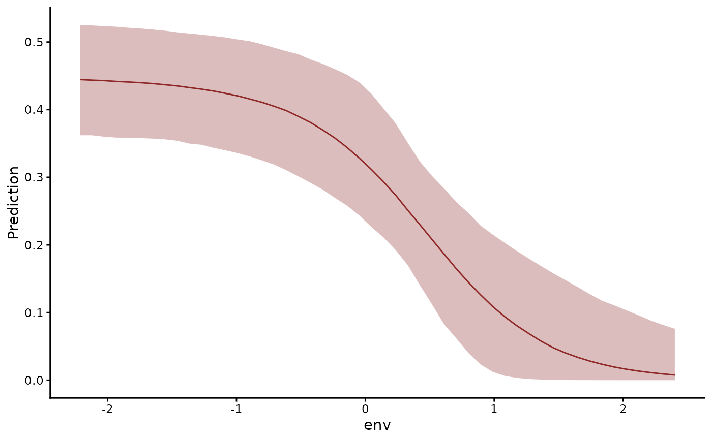
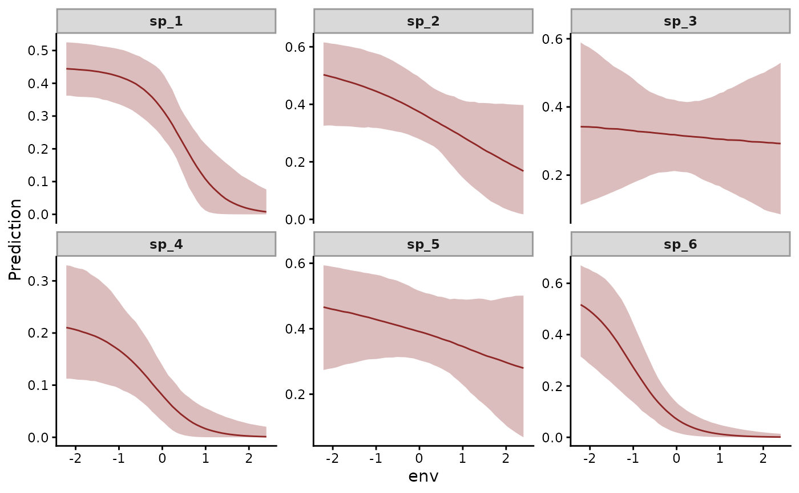
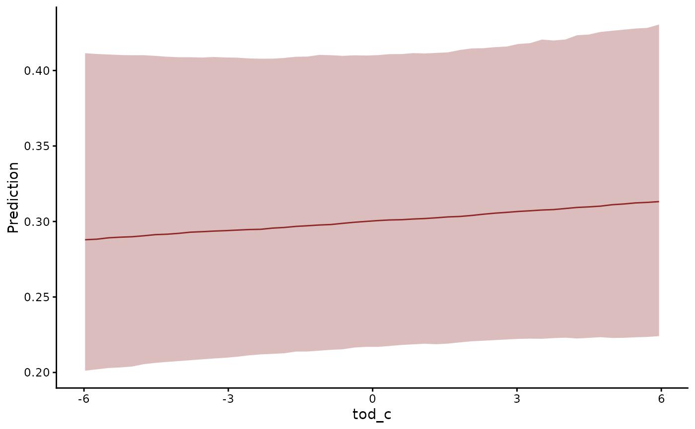
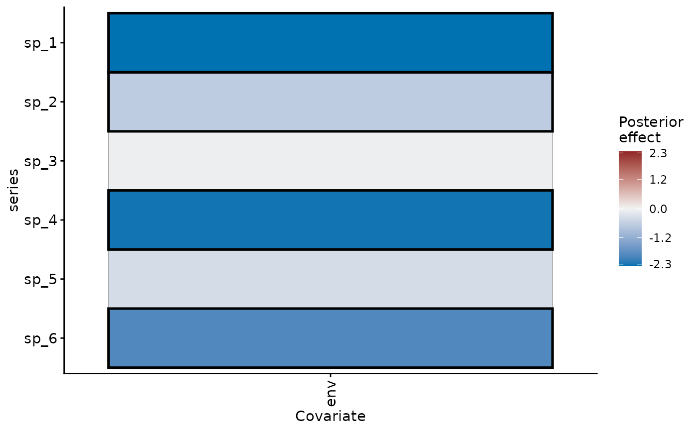
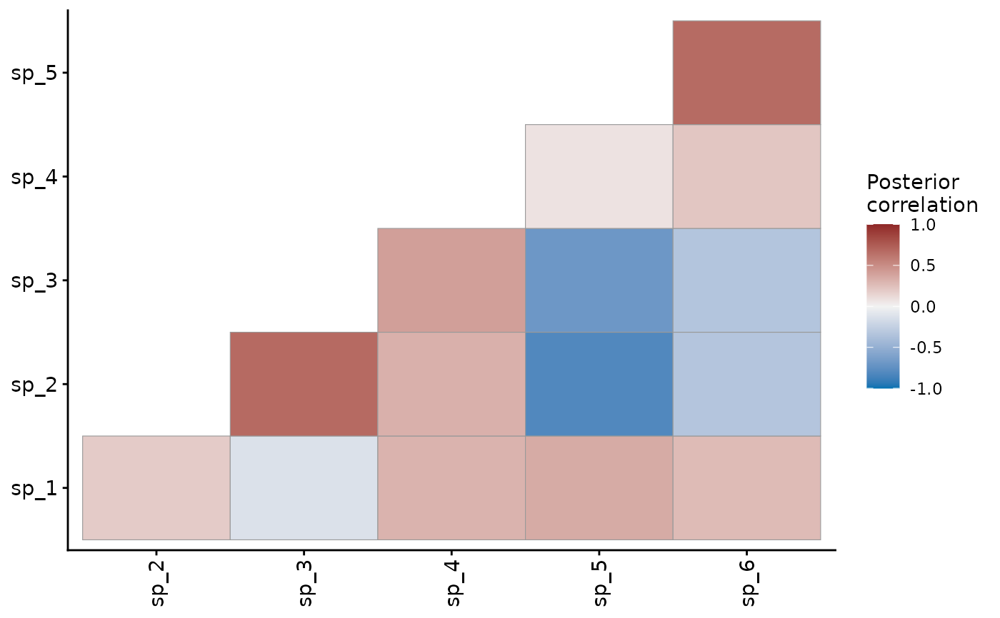
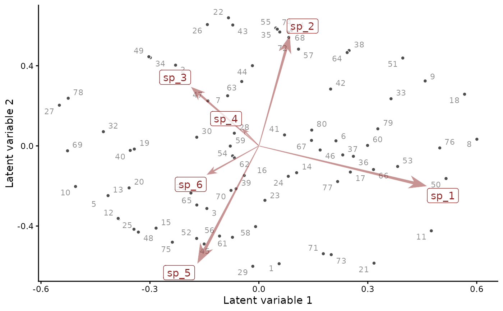
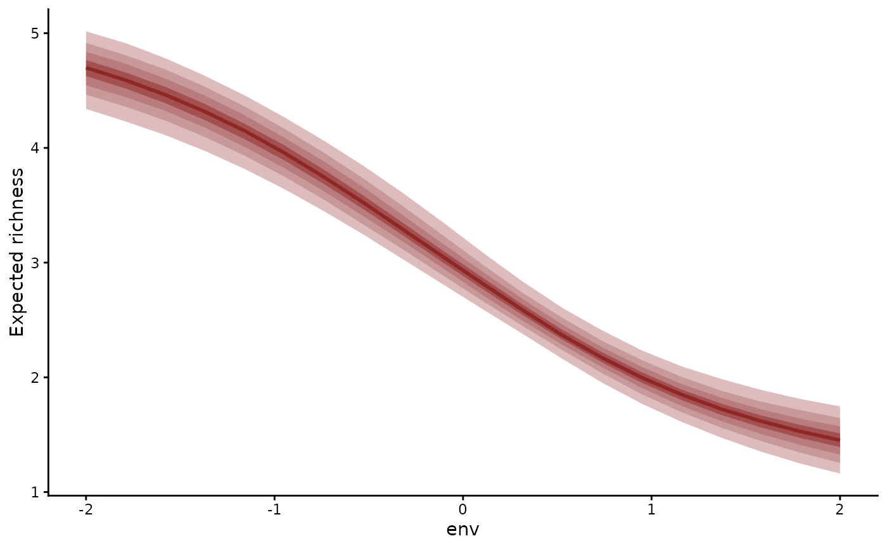
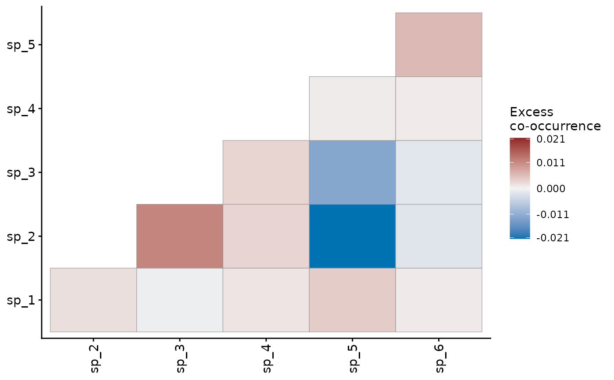

Gives each species' response to each named covariate, draw by draw,
with the posterior probability of its sign. A jsdgam() fit with
trait_slopes also gives each trait's effect on those responses,
the fourth-corner coefficients. The heatmaps show which species
respond positively, which negatively and which the data leave
uncertain.
Usage
species_effects(object, ...)
# S3 method for class 'mvgam'
species_effects(
object,
variables,
...,
prob_threshold = 0.95,
probs = c(0.025, 0.975),
robust = FALSE,
ndraws = NULL,
draw_ids = NULL,
resp = NULL
)
# S3 method for class 'mvgam_species_effects'
summary(object, type = c("species", "traits"), ...)
# S3 method for class 'mvgam_species_effects'
print(x, digits = 2L, ...)
# S3 method for class 'mvgam_species_effects'
plot(x, type = c("species", "traits"), supported_only = FALSE, ...)Arguments
- object
A fitted
mvgamobject of several series.- ...
Unused. Anything passed here is refused.
- variables
Character vector of the covariates to report, each a column of the data that a formula of the model uses.
- prob_threshold
The posterior probability of its sign an effect needs to count as supported, at least 0.5 and below 1. Defaults to 0.95. It sets the
sigcolumn ofsummary()and the effectsplot()outlines.- probs
Two probabilities for the lower and upper bounds of the credible interval. Defaults to
c(0.025, 0.975).- robust
Logical.
TRUEsummarises each effect by its median and median absolute deviation. Defaults toFALSE, the mean and the standard deviation.- ndraws, draw_ids
The posterior draws to use, as
hindcast.mvgam()takes them.NULLfor both uses every draw.- resp
The response to report, needed on a model with several.
- type
"species"(the default) for the species by covariate panel, or"traits"for the trait by covariate panel of atrait_slopesfit.- x
An
mvgam_species_effectsobject.- digits
Integer number of significant digits. Defaults to 2.
- supported_only
Logical.
TRUEleaves blank every effect whoseprob_nonzerois at mostprob_threshold. Defaults toFALSE.
Value
An object of class mvgam_species_effects. print() counts
the supported positive and negative responses to each covariate.
summary() returns a tibble of each effect's estimate, interval and
sign probabilities, with sig marking the supported ones.
plot() draws a heatmap of species by covariate, or of trait by
covariate with type = "traits". The species element holds the
summary matrices, [species, effect]. The draws element holds
the [draws, species, effect] array. A trait_slopes fit adds a
traits element of the same form.
Details
Species effects. A species' response to a numeric covariate is the
average slope of its linear predictor, over the rows the species was
fitted to, as marginaleffects::avg_slopes() gives it with
type = "link". A linear term gives the species' own coefficient,
such as b_env plus b_env:seriessp_2 in y ~ env * series. A
smooth or an interaction gives the slope averaged over the species'
rows. A smooth that rises and falls can average to a slope near zero.
conditional_effects.mvgam() shows its shape. A covariate in
trend_formula, including one written with lv_axis(), reaches each
species through its loadings. A factor covariate gives one effect per
level, its difference from the reference level.
A diri(), multi() or categ() fit gives each species' share
through a softmax, which ignores a slope every species shares. Each
draw is then centred across the species. An effect is the slope of
the species' log share relative to the geometric mean of the shares,
the centred log-ratio scale.
An effect is on the link scale, per unit of the covariate. Effects of
covariates measured in different units compare better when the
covariates are standardised. A covariate that only a distributional
formula uses, such as the detection formula of occ(), moves no
species' linear predictor and is refused.
Trait effects. trait_slopes = ~ trait in jsdgam() makes each
species' response depend on its traits. A trait effect is how far the
response moves per unit of the trait, with each species' own deviation
held. A linear term gives its coefficient, such as b_env:size. A
smooth of the covariate or of the trait gives the effect averaged over
the fitted rows. A factor trait gives one effect per level, its
difference from the reference level. A covariate of factor_formula
reaches no trait. Its trait effects are zero.
Support. prob_nonzero is the larger of the posterior
probabilities that an effect is positive and that it is negative. An
effect is supported when prob_nonzero exceeds prob_threshold.
References
Ovaskainen, O. and Abrego, N. (2020). Joint Species Distribution Modelling: With Applications in R. Cambridge University Press. doi:10.1017/9781108591720
See also
residual_cor() for the associations the covariates leave,
conditional_effects.mvgam() for the shape of an effect,
variance_partition() for how much each source moves a species
Examples
# \dontrun{
# Detections of 6 species at 80 sites, 4 visits each. Occupancy
# responds to the site covariate `env` and detection to the time of
# day `tod_c`. Two latent factors drive the species associations.
simdat <- sim_closure_unit_data(
family = occ(),
n_species = 6L,
n_sites = 80L,
n_visits = 4L,
n_lv = 2L,
seed = 1L
)
# A joint occupancy model. Each species has its own occupancy
# intercept and `env` slope, plus its own detection intercept. Two
# latent factors take up the residual association.
mod <- jsdgam(
formula = bf(y ~ series * env, p ~ series + tod_c),
factor_formula = ~ -1,
data = simdat$data_train,
family = occ(),
n_lv = 2L,
chains = 2,
silent = 2
)
#> Warning: 31 of 2000 (2.0%) transitions ended with a divergence.
#> See https://mc-stan.org/misc/warnings for details.
summary(mod)
#> Family: occ
#> Links: mu = logit; p = logit
#> Formula: y ~ series * env
#> p ~ series + tod_c
#> Data: simdat$data_train (Number of observations: 1920)
#> Species: 6
#> Trends: 2 latent factors
#> Draws: 2 chains, each with iter = 2000; warmup = 1000; thin = 1;
#> total post-warmup draws = 2000
#>
#> == Observation Model ==
#> Regression Coefficients:
#> Estimate Est.Error l-95% CI u-95% CI Rhat Bulk_ESS Tail_ESS
#> Intercept 1.07 0.72 0.12 3.06 1.03 73 32
#> p_Intercept -0.20 0.18 -0.55 0.13 1.00 895 1234
#> seriessp_2 -0.45 0.80 -2.36 0.87 1.02 94 47
#> seriessp_3 -1.29 0.80 -3.43 -0.17 1.03 85 36
#> seriessp_4 -1.53 1.19 -4.11 1.21 1.03 120 91
#> seriessp_5 -0.21 0.93 -2.34 1.28 1.04 56 35
#> seriessp_6 -3.14 0.87 -5.19 -1.83 1.02 108 82
#> env -2.36 1.30 -6.57 -0.95 1.04 62 24
#> seriessp_2:env 1.69 1.35 -0.14 6.01 1.03 73 27
#> seriessp_3:env 2.30 1.32 0.70 6.44 1.03 65 25
#> seriessp_4:env 0.04 1.98 -4.43 4.86 1.03 74 27
#> seriessp_5:env 1.98 1.37 0.29 6.28 1.04 61 24
#> seriessp_6:env 0.44 1.47 -1.70 4.90 1.03 64 26
#> p_seriessp_2 0.55 0.24 0.08 1.03 1.00 1049 1335
#> p_seriessp_3 1.10 0.26 0.58 1.61 1.00 1200 1497
#> p_seriessp_4 -1.06 0.42 -1.90 -0.27 1.00 696 1041
#> p_seriessp_5 0.51 0.24 0.06 0.98 1.00 1087 1350
#> p_seriessp_6 0.61 0.33 -0.08 1.22 1.00 1325 1055
#> p_tod_c 0.01 0.02 -0.03 0.05 1.00 2684 1350
#>
#> == Trend Model ==
#> Factor Loadings:
#> Estimate Est.Error l-95% CI u-95% CI Rhat Bulk_ESS Tail_ESS
#> Z_tilde[sp_1,1] 1.16 1.48 0.11 6.21 1.04 57 25
#> Z_tilde[sp_2,1] 0.23 0.97 -1.30 2.64 1.01 1049 680
#> Z_tilde[sp_3,1] -0.06 0.69 -1.43 1.10 1.00 1637 671
#> Z_tilde[sp_4,1] 0.22 1.21 -1.58 2.58 1.00 1294 459
#> Z_tilde[sp_5,1] 0.33 1.13 -1.78 2.66 1.01 817 477
#> Z_tilde[sp_6,1] 0.17 0.71 -1.11 1.73 1.00 1046 1185
#> Z_tilde[sp_2,2] 0.90 0.99 0.03 3.58 1.00 320 377
#> Z_tilde[sp_3,2] 0.33 0.95 -1.04 2.43 1.00 792 241
#> Z_tilde[sp_4,2] 0.15 1.21 -1.98 2.45 1.01 1187 560
#> Z_tilde[sp_5,2] -0.73 1.23 -3.36 0.93 1.01 673 416
#> Z_tilde[sp_6,2] -0.14 0.73 -1.59 1.35 1.00 1636 1113
#>
#> Draws were sampled using sampling(NUTS). For each parameter, Bulk_ESS
#> and Tail_ESS are effective sample size measures, and Rhat is the potential
#> scale reduction factor on split chains (at convergence, Rhat = 1).
#>
#> Next steps:
#> - `pp_check(fit, type = "fit_stat")`: goodness of fit of unit totals
#> - `plot(hindcast(fit, type = "latent_state"))`: posterior occupancy of each unit
#> - `shared_variation(fit)`: covariance the factors imply, unchanged by rotation
#> - `residual_cor(fit)`: implied correlations among species
#> - `ordinate(fit)`: biplot of the factor scores and loadings
#> - `loo(fit)` / `loo_compare(...)`: model fit + comparison
#> Use `how_to_cite(fit)` for a methods paragraph and `methods_md(fit)` for its equations.
# The effect of `env` on the chance of a detection, occupancy times
# detection
conditional_effects(mod)




# Each species' response to env, outlined where its sign is clear
plot(species_effects(mod, variables = "env"))

# The residual correlations among species the factors imply
plot(residual_cor(mod))

# Site scores and species loadings on the two factors
ordinate(mod, rotation = "varimax")

# Expected richness along `env`. The second plot marks the pairs of
# species found together more often than `env` predicts.
gradient <- datagrid(model = mod, env = seq(-2, 2, length.out = 20))
cm <- community(mod, newdata = gradient)
plot(cm)

plot(cm, type = "cooccurrence")

# The draws, for any contrast: richness at the end of the gradient
# less that at its start
rv <- as_draws_rvars(cm)
rv$richness[20] - rv$richness[1]
#> rvar<2000>[1] mean ± sd:
#> [1] -3.2 ± 0.43
# Next, compare n_lv = 1 with update(mod, n_lv = 1L) and loo()
# }